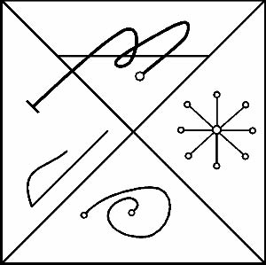

INANNA’nın sayısı, takdir kazanma büyülü sözlerinde sıkça bilinen sayısı olan, on beştir, aşağıdaki onun mührüdür:

Güneşin Tanrısı, NANNA’nın oğlu Tanrı SHAMMASH’tır. İki boynuzlu bir taç takarak, sağ eli ile, yüksekte bir asa, sol elinde ise her yöne ışınlar gönderdiği alevden bir disk tutarak altın bir taht üzerine oturur. Işığın ve yaşamın Tanrısıdır. Rengi altın rengidir. Özü, altında ve bütün altından nesnelerde ve bitkilerde bulunur. Bazen UDUU denilir. Onun kapısı, takip eden ritüellerle geçmen gereken dördüncüdür. Işıkların Merdivenindeki Basamağı Altındır.
Bu, onun Güneş gökyüzünde, tek başına bir dağın zirvesinde ya da Güneş ışınlarına yakın böyle bir yerde, ama tek başına yükseldiğinde altın üzerine oyman gereken Mührüdür. Bittiğindeyse, kare şeklinde en güzel ipeğe sarılmalı ve ihtiyaç duyulacağı zamana kadar orada yatırılmalıdır.